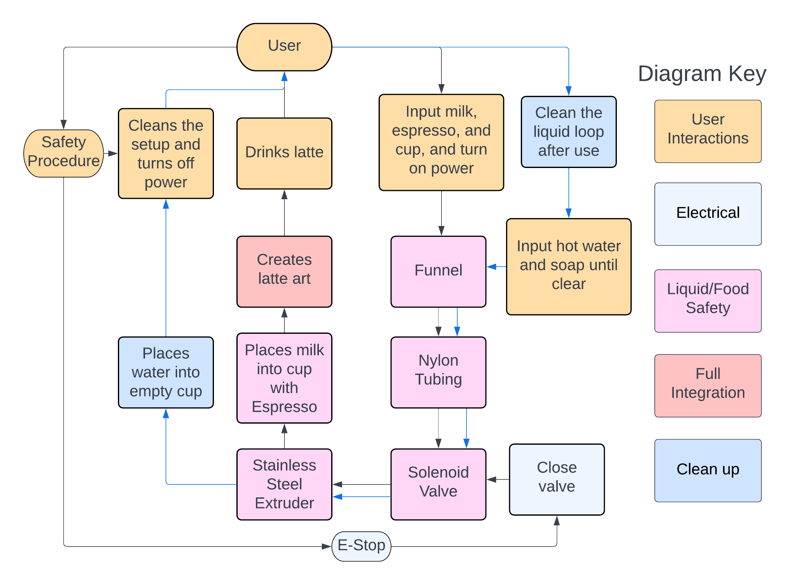

System
In order to facilitate integration, we decided to draw out a Systems Map to visualize how each separate aspect of the project interacts with each other.
OVERALL SYSTEM
The process begins with the user, who inputs milk and a cup of espresso into the machine, and turns on the power. Power turns on the stepper motors, and when the user activates the software through the GUI, the motors are able to move to the proper positions. Depending on the user’s choices, the GUI will send Python’s G-Code through serial communication to the Arduino, which will control the motors accordingly. Milk begins to pour from the valve/extruder into the cup, and a pattern is drawn as the G-Code moves the motors in a specific pattern. Once the pattern is done, the user can remove their cup and enjoy their drink.
LIQUID SYSTEM: HOW WE ACCOUNT FOR FOOD SAFETY
Going into this project, one of the biggest risks that we had to be continually aware of throughout the design process was food safety; anything and everything that interacts with either the espresso or milk must be made out of some sort of material that would preserve the quality of the food and the safety of the drinker. With this in mind, we decided to map out how each system interacts with the liquid.
The first interaction with liquid starts with the user, who must input milk into the machine, as well as place a cup of espresso into the cupholder. The input milk is initially stored in the funnel, nylon tubing, and solenoid valve, all of which are made using food-safe materials. When the machine is turned on and the valve is enabled, the liquid will pour through the extruder piece attached to the bottom of the valve, which is made of stainless steel. From there, the milk flows into the cup with the espresso, and after the design is done, the user may remove the cup and enjoy their drink.
In general, liquid interactions are kept to a minimum with this system, as any liquid in the machine is enclosed in only 3 parts. To further ensure liquids do not interact with the non-safe aspects of our machine, we have made the design choice to harness all electrical components to the back end of the robot, opposite of where the liquids flow.